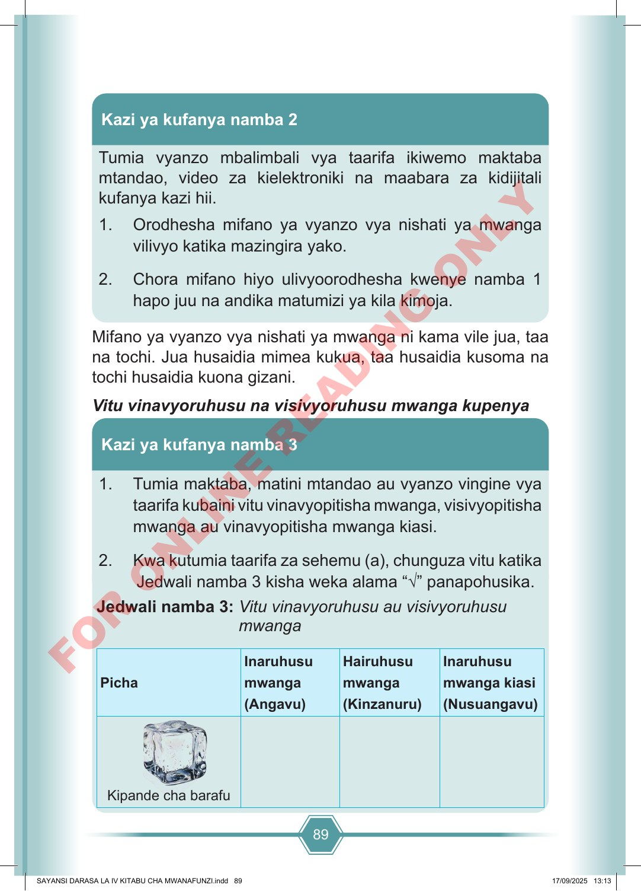

89 Tumia vyanzo mbalimbali vya taarifa ikiwemo maktaba mtandao, video za kielektroniki na maabara za kidijitali kufanya kazi hii. 1. Orodhesha mifano ya vyanzo vya nishati ya mwanga vilivyo katika mazingira yako. 2. Chora mifano hiyo ulivyoorodhesha kwenye namba 1 hapo juu na andika matumizi ya kila kimoja. Kazi ya kufanya namba 2 Mifano ya vyanzo vya nishati ya mwanga ni kama vile jua, taa na tochi. Jua husaidia mimea kukua, taa husaidia kusoma na tochi husaidia kuona gizani. Vitu vinavyoruhusu na visivyoruhusu mwanga kupenya 1. Tumia maktaba, matini mtandao au vyanzo vingine vya taarifa kubaini vitu vinavyopitisha mwanga, visivyopitisha mwanga au vinavyopitisha mwanga kiasi. 2. Kwa kutumia taarifa za sehemu (a), chunguza vitu katika Jedwali namba 3 kisha weka alama “√” panapohusika. Kazi ya kufanya namba 3 Jedwali namba 3: Vitu vinavyoruhusu au visivyoruhusu mwanga Picha Inaruhusu mwanga (Angavu) Hairuhusu mwanga (Kinzanuru) Inaruhusu mwanga kiasi (Nusuangavu) Kipande cha barafu SAYANSI DARASA LA IV KITABU CHA MWANAFUNZI.indd 89 SAYANSI DARASA LA IV KITABU CHA MWANAFUNZI.indd 89 17/09/2025 13:13 17/09/2025 13:13 F O R O N L I N E R E A D I N G O N L Y